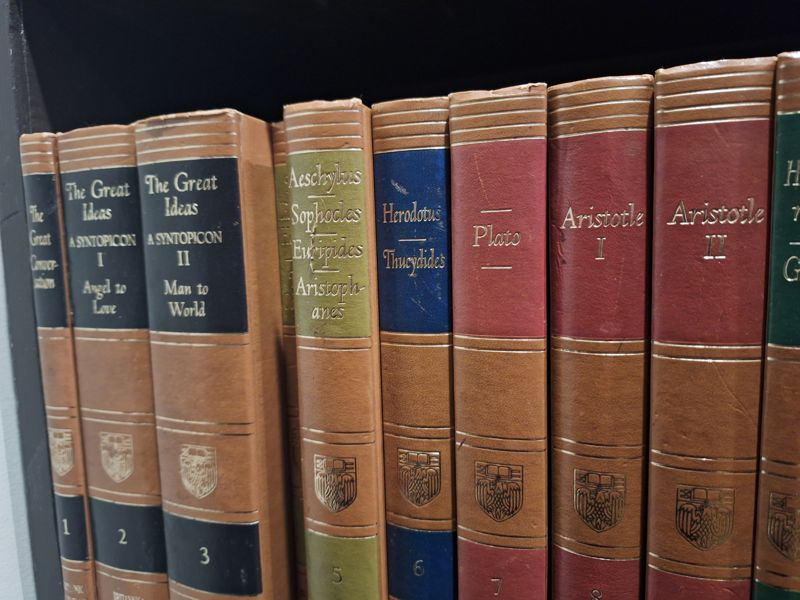

Great Books of the Western World (Encyclopaedia Britannica, 1952) - 50 of 54 volumes
Mortimer J. Adler (editor) · Encyclopaedia Britannica, Chicago, 1952

C$120 · Used condition
Details
- Publisher: Encyclopaedia Britannica, Chicago, 1952
- Binding: Hardcover
- Edition: First Printing (likely)
- Category: Reference Set